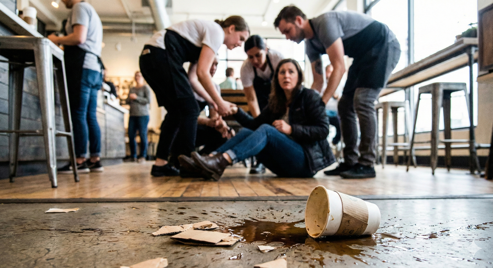

LARM
Kaos på trendigt Södermalmskafé – Småbarnsmamma kollapsade i ljudvolymen
Malin Andersson, 38, trodde hon skulle njuta av en lugn stund på sitt stamkafé. Men istället möttes hon av ett inferno av barnskriik och espressomaskiners dån.
Läs mer